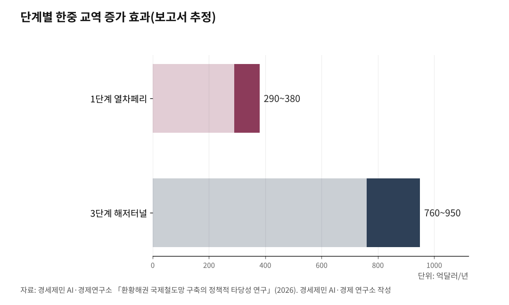

[환황해 철도망⑧] 열차페리 1~3년, 해저터널 10년 뒤... 첫 단추는 인천신항 인입선
제재 밖 열차페리, 인천신항~웨이하이 열 시간 안팎 시범 노선
제5차 국가철도망 공청회 10월이냐 11월이냐, 인천신항 인입선의 갈림길
해저터널 374km는 건설비 100조원 이상에 편익비용비 1.0 미만
대륙으로 가는 철길을 놓자는 말은 오래됐다. 무엇부터 하느냐에는 답이 갈렸다. 유엔 제재가 북한 경유 노선을 막은 사이 제재 밖에 남은 길이 있다. 화차를 배에 통째로 싣는 열차페리다. 어느 길을 언제 여는지 본다.

1. 제재가 막은 북한 경유, 남은 바닷길
경세제민 AI·경제연구소는 2026년 1월 「환황해권 국제철도망 구축의 정책적 타당성 연구」 보고서를 냈다. 열차페리와 해저터널과 북한 경유를 견줬다. 결론은 「먼저 열차페리, 나중에 해저터널」이다. 문헌 분석과 교역 모형 추정이 같은 답을 냈다고 보고서는 적었다.
북한 경유를 미룬 까닭은 둘이다. 유엔 안전보장이사회 결의 2375호(2017년) 18항은 북한과 합작회사를 세우고 운영하는 일을 막았다. 보고서는 남북 철도 공동 운영이 여기 걸릴 가능성이 높다고 봤다. 2024년 10월 북한은 경의선 연결도로와 동해선 도로·철길 일부를 폭파했다.
18항에는 예외도 있다. 이익을 내지 않는 비상업적 공공 기반시설 사업은 제재위원회가 건별로 미리 승인하면 할 수 있다. 러시아산 석탄만 실어 내는 북러 라진~하산 항만·철도 사업도 이 조항에서 뺐다. 이 예외가 2단계 전략의 발판이다.
열차페리는 이 벽을 비켜 간다. 선박에 철로를 깔고 화차를 통째로 실어 바다를 건넌다. 북한 땅을 밟지 않으니 제재 조항에 걸리지 않는다. 한국과 중국은 둘 다 두 레일 사이 간격이 1435mm인 표준궤를 쓴다. 화차를 갈아 싣지 않고 그대로 달릴 수 있다.

2. 1단계 열차페리, 1~3년 안 시범 운항
보고서가 잡은 1단계는 1~3년이다. 시범 노선은 인천신항과 중국 산둥성 웨이하이항을 잇는 바닷길로 보고서는 약 370km로 잡았다. 운항은 열 시간 안팎이고 처음에는 주 3~5회 다닌다. 실을 짐은 전자부품과 자동차 부품, 전자상거래 물품처럼 시간에 쫓기는 화물이다.
지금 컨테이너선 같은 일반 한중 해상운송은 2~5일 걸린다. 열차페리는 하루 안에 닿는다. 빠르지만 비싼 비행기와 싸지만 느린 배 사이의 빈칸을 노린다. 보고서는 카페리로 14시간 걸리는 구간이 10시간으로 30% 줄어든다고 봤다.
효과는 중력모형으로 셈했다. 두 나라 경제 규모와 거리로 교역량을 재는 모형이다. 운송시간이 준 만큼 거리가 15% 가까워진 것으로 쳤다. 그러면 한중 교역이 11~14% 늘어난다. 2023년 교역액 약 2700억달러 기준으로 한 해 290억~380억달러다.
다만 보고서는 모형에 넣은 계수를 선행연구 범위의 예시값이라고 주를 달았다. 편익비용비는 얻는 이익을 드는 돈으로 나눈 값이다. 보고서는 열차페리의 이 값이 1.0을 넘는다고 봤으나 산출 과정은 싣지 않았다. 1단계 운영 자료가 쌓여야 이 숫자가 단단해진다.
보고서는 독일과 덴마크를 잇는 페마른 벨트 열차페리를 앞선 사례로 들었다. 1963년 시작한 이 항로가 해저터널이 뚫릴 때까지 열차를 나를 것이라고 적었다. 사실은 다르다. 열차를 실은 마지막 배는 2019년 12월 14일 떴다.
해저터널 개통도 당초 2029년에서 2031년으로 늦춰질 전망이다. 열차페리는 터널이 생기기 전에 먼저 멈췄다. 열차페리가 해저터널까지 이어 주는 다리라는 보고서 서술은 이 대목에서 고쳐 읽어야 한다.
3. 첫 단추 인천신항 인입선과 제5차 철도망
배에 화차를 실으려면 철길이 부두까지 들어가야 한다. 보고서는 인천항과 평택항의 인입선을 배를 대는 안벽 앞까지 늘리라고 적었다. 인입선은 큰 철길에서 갈라져 항만이나 공장으로 들어가는 짧은 철길이다. 인천신항에는 이 철길이 아직 없다.
인천신항 인입선은 수인분당선 월곶역에서 갈라져 송도국제도시 11공구를 지나 인천신항에 닿는 화물철도 구상이다. 제3차 국가철도망 구축계획에는 들었다. 제4차(2021~2030)에서는 추가 검토 사업으로 밀렸다. 언론에 따라 「인천신항선」으로도 부른다.
인천시는 제5차 국가철도망 구축계획(2026~2035)에 이 노선을 우선순위 사업으로 냈다. 제2공항철도와 대장홍대선 청라 연장과 함께 묶은 핵심 노선이다. 이 계획은 철도건설법에 따른 10년 단위 법정계획이다. 여기 들어가야 예비타당성조사 같은 다음 절차를 밟는다.
제5차 계획은 당초 2025년 말 수립이 목표였으나 비상계엄과 대선 정국으로 늦어졌다. 김윤덕 당시 국토교통부 장관은 2026년 1월 업무보고에서 7월은 돼야 가능하다고 했다. 6월에는 국토부 철도정책과 관계자가 하반기 발표 예정이라고 인천투데이에 밝혔다.
공청회 날짜는 기록이 갈린다. 홍지선 국토교통부 장관은 후보자 시절인 9월 16일 청문회에서 9월 말~10월 중 공청회를 거쳐 연내 고시하겠다고 했다. 이투데이는 9월 30일 국토부를 인용해 다음 달 공청회를 거쳐 11월 중 확정한다고 전했다.
철도경제신문은 10월 6일 공청회가 11월로 한 달가량 늦어질 것으로 내다봤다. 10월 14일 현재 공청회 날짜를 밝힌 보도는 없다. 열차페리의 첫 단추가 육상 철도 계획의 한 줄에 걸려 있다. 남한 철도와 항만부터 잇자는 이 연재의 논지가 여기서 시험대에 오른다.
4. 2단계 제재 면제와 설계 선행, 3~10년
보고서의 2단계는 3~10년이다. 북한 경유 철길을 당장 놓는 단계가 아니다. 놓을 수 있는 상태를 미리 만들어 두는 단계다. 과제는 셋이다. 제재 면제 신청과 설계 선행, 한중러일 철도 협력을 묶는 다자 협의체다.
제재 면제에는 선례가 있다. 2018년 11월 유엔 안보리 대북제재위원회는 남북 철도 공동조사에 제재 면제를 승인했다. 조사에 쓸 유류와 장비를 북한으로 가져갈 수 있게 한 조치였다. 보고서는 철도 연결을 동북아 평화를 위한 공공 기반시설로 규정해 면제를 거듭 신청하라고 했다.
설계와 환경영향평가는 국제철도협력기구, 유엔 아시아태평양경제사회위원회와 함께 미리 돌린다. 보고서가 꼽은 구간은 경의선 도라산~개성 약 15km와 개성~평양 약 150km, 동해선 제진~금강산 약 25km다. 제재가 풀리는 날 바로 첫 삽을 뜨자는 주문이다.
2단계는 정권이 바뀌어도 이어 갈 수 있는 준비 작업이다. 남북 관계가 얼어붙은 해에도 설계 도면과 면제 논리는 쌓을 수 있다. 대륙철도를 정치 일정에서 떼어 놓자는 이 연재의 다섯째 논지와 맞닿는다.
5. 3단계 해저터널, 열차페리 실적으로 다시 셈
3단계는 10년 뒤다. 보고서가 검토한 한중 해저터널은 서해 밑 약 374km다. 바다 밑 구간이 가장 긴 영불해협 터널은 총연장 50km이고 그 가운데 37km가 해저다. 한중 터널은 그 총연장의 일곱 배가 넘는다.
효과는 열차페리보다 크다. 운송시간이 70% 줄고 교역이 28~35% 늘어 한 해 760억~950억달러가 더해진다. 그러나 건설비가 100조원을 넘고 편익비용비가 1.0에 못 미친다. 보고서는 공사도 10~20년 걸릴 것으로 봤다.
그래서 보고서는 해저터널을 지금 정할 일이 아닌 장기 과제로 돌렸다. 열차페리가 실제 나른 물동량으로 편익비용비를 다시 셈한다. 탄소 감축 편익과 국제 컨소시엄 재원, 서해 해저 지질 탐사도 3단계 과제다.
로드맵의 순서는 이 연재의 다섯 논지와 겹친다. 열차페리가 노리는 것은 사람이 아니라 시간에 민감한 화물이다. 첫 단추는 대륙 연결이 아니라 남한 항만과 철도를 잇는 인입선이다. 그 출발점이 인천신항이다.
실을 짐은 전자부품과 자동차 부품 같은 산업 공급망 물량이다. 다음 단계는 앞 단계가 쌓은 실적으로 정한다. 정권의 시간표가 아니라 수치로 가는 장기 국가전략이다. 제5차 철도망 공청회에서 인천신항 인입선이 어느 칸에 드는지가 첫 시험이다.
※ 이 기사는 AI 프로그램 클로드를 활용해 작성했습니다.
참고문헌
공식 발표자료와 공공기록
· United Nations Security Council, "Security Council Imposes Fresh Sanctions on Democratic People's Republic of Korea, Including Bans on Natural Gas Sales, Work Authorization for Its Nationals"(SC/12983, 결의 2375호 전문 수록), 2017.9.11., https://press.un.org/en/2017/sc12983.doc.htm
· Bouygues Construction, "Channel Tunnel"(사업 소개), https://www.bouygues-construction.com/en/achievements/channel-tunnel
연구보고서와 논문
· 김갑봉, "환황해권 국제철도망 구축의 정책적 타당성 연구: 열차페리, 해저터널, 북한 경유 노선의 비교분석"(v2.6-2), 경세제민 AI·경제연구소 연구보고서
언론 보도
· 박규호, "대장홍대선 청라 연장·제2공항철도 등 제5차 국가철도망 하반기 발표", 인천투데이, 2026.6.9., https://www.incheontoday.com/news/articleView.html?idxno=319892
· 이순민, "인천 서북부 철도망 운명, 11월 안에 판가름", 인천일보, 2026.8.27., https://www.incheonilbo.com/news/articleView.html?idxno=1330644
· 장지승·박지훈·안재균·조원진, "국가철도망 재편 앞두고…노선 확보전 치열", 서울경제, 2026.9.17., https://www.sedaily.com/article/20092248
· 김완진, "李대통령, 재경 이형일·국방 강신철·국토 홍지선 장관 임명안 재가", SBS Biz, 2026.9.22., https://biz.sbs.co.kr/article/20000336117
· 박규호·인투아이(INTO-AI), "[5차 국가철도망 발표 임박] 인천신항 인입선, 항만 물류 철도축 열까", 인천투데이, 2026.9.27., https://www.incheontoday.com/news/articleView.html?idxno=324052
· 천상우, "600조 요구 몰린 5차 국가철도망…향후 10년 철도 투자 어디로", 이투데이, 2026.9.30., https://www.etoday.co.kr/news/view/2629448
· 곽나영, "5차 국가철도망 공청회 11월에 열릴 듯…'연내 고시' 빠듯할 수도 [이슈]", 철도경제신문, 2026.10.6., https://www.redaily.co.kr/news/articleView.html?idxno=17711
· Kim Tong-Hyung(AP), "Koreas gain UN sanctions exemption for joint rail survey", PBS NewsHour, 2018.11.24., https://www.pbs.org/newshour/world/koreas-gain-un-sanctions-exemption-for-joint-rail-survey
· 전경웅, "유엔·美, 남북철도조사 '제재' 면제… 연내 착공 가능성", 뉴데일리, 2018.11.26., https://www.newdaily.co.kr/site/data/html/2018/11/26/2018112600012.html
· Associated Press, "North Korea blows up parts of inter-Korean road and rail links in a symbolic display of anger", WJXT News4JAX(AP 전재), 2024.10.15., https://www.news4jax.com/news/world/2024/10/15/north-korea-blows-up-parts-of-inter-korean-roads-as-tensions-with-south-korea-soars/
· sandra, "End of an Era: Last Train on Puttgarden – Rødby", Ferry Shipping News, 2019.12.20., https://ferryshippingnews.com/end-of-an-era-last-train-on-puttgarden-rodby/
· dpa-AFX, "Eröffnung des Fehmarnbelt-Tunnels verschiebt sich bis 2031", Deutsche Börse(dpa-AFX 전재), 2026.1.16., https://live.deutsche-boerse.com/nachrichten/Eroeffnung-des-Fehmarnbelt-Tunnels-verschiebt-sich-bis-2031-6cb14872-238e-49c1-b38b-4927903a7259
· 이병기, "'세월호' 출항했던 인천 여객터미널 수년째 휑… 운항 재개 '안갯속' [현장, 그곳&]", 경기일보, 2024.4.15., https://www.kyeonggi.com/article/20240414580144
사진 출처
· [사진1] のりまき(일본어 위키백과), "Korail-jejin-station.jpg", 위키미디어 공용, CC BY-SA 3.0, https://commons.wikimedia.org/wiki/File:Korail-jejin-station.jpg
· [사진2] Zimaro, "Fehmarn Puttgarden ICE Verladung Fähre.jpg", 위키미디어 공용, CC BY-SA 4.0, https://commons.wikimedia.org/wiki/File:Fehmarn_Puttgarden_ICE_Verladung_Fähre.jpg
· [사진3] 서울지하철1호선, "Busansinhang.jpg", 위키미디어 공용, CC BY-SA 4.0, https://commons.wikimedia.org/wiki/File:Busansinhang.jpg
· [사진4] Uwe Brodrecht, "개성역 2015-10-23.jpg", 위키미디어 공용, CC BY-SA 2.0, https://commons.wikimedia.org/wiki/File:개성역_2015-10-23.jpg
· [사진5] Florian Fèvre, "Eurotunnel Class 9705 - Sortie Tunnel sous la Manche à Coquelles.jpg", 위키미디어 공용, CC BY-SA 4.0, https://commons.wikimedia.org/wiki/File:Eurotunnel_Class_9705_-_Sortie_Tunnel_sous_la_Manche_à_Coquelles.jpg
#환황해철도 #열차페리 #해저터널 #인천신항인입선 #제5차국가철도망구축계획 #대북제재 #유엔결의2375호 #페마른벨트 #경의선 #단계별로드맵